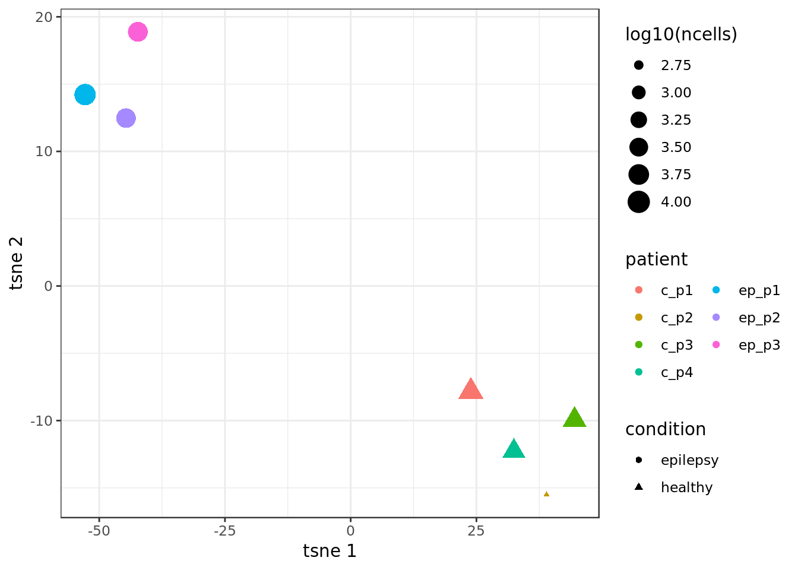
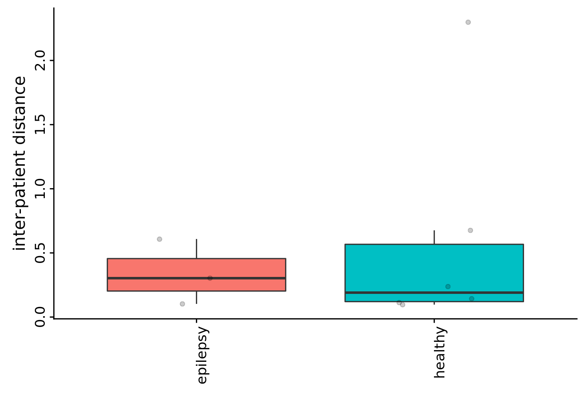
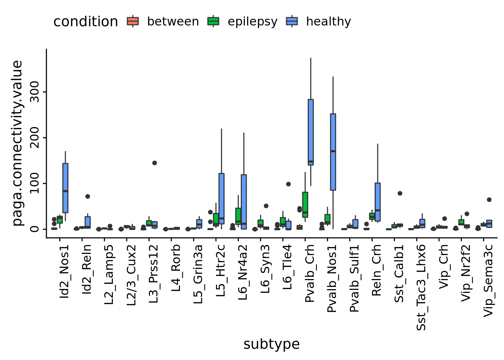
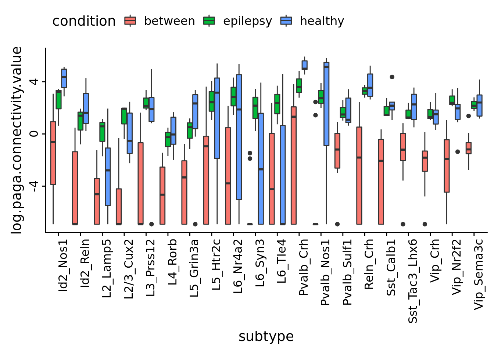
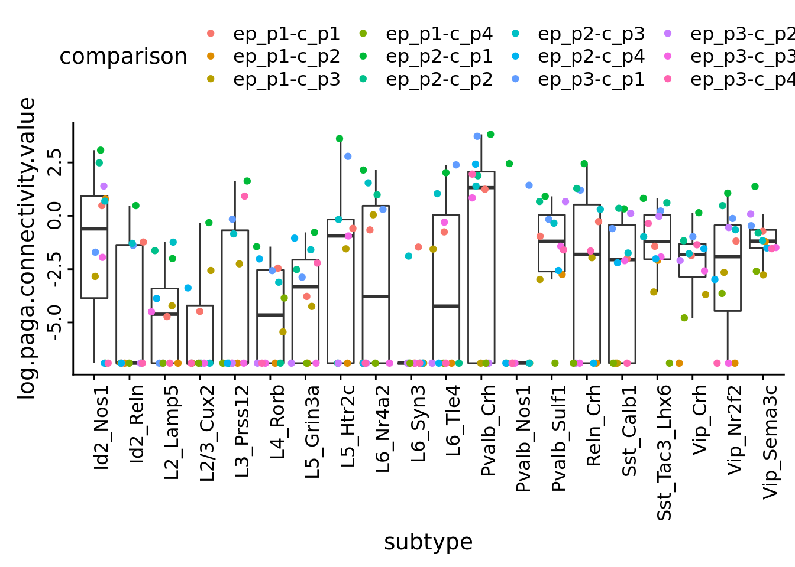
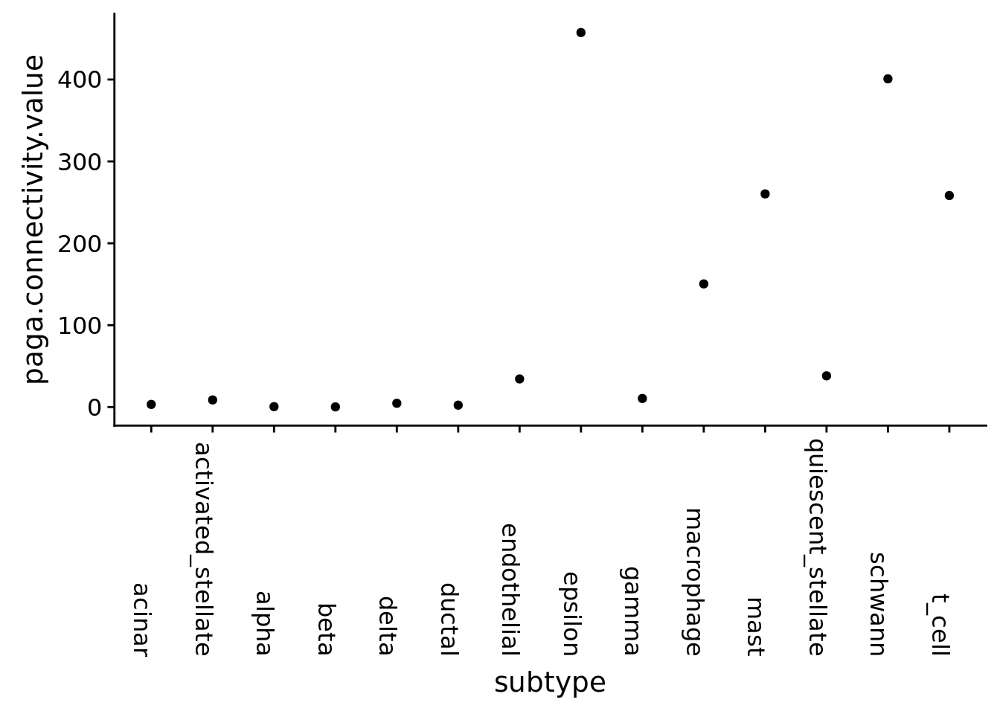
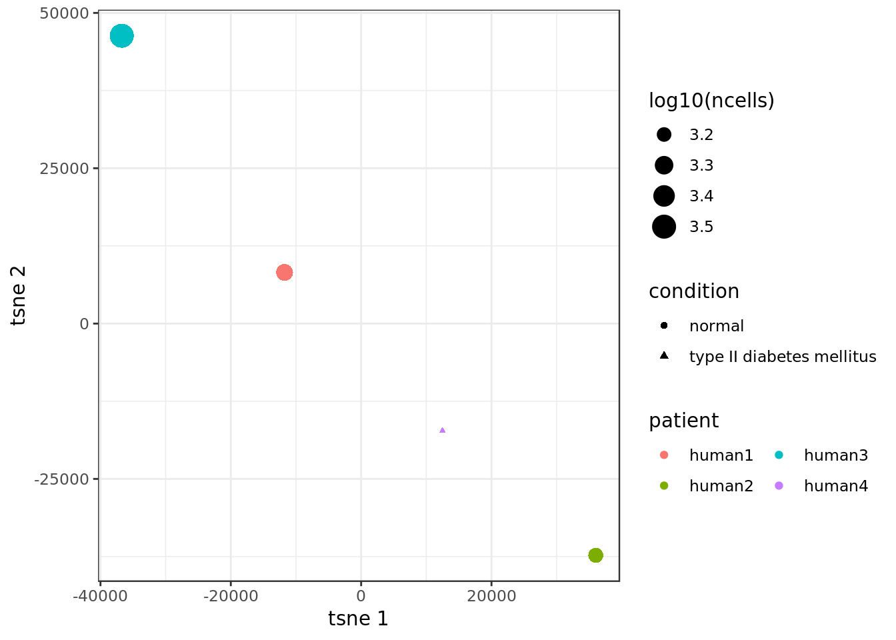
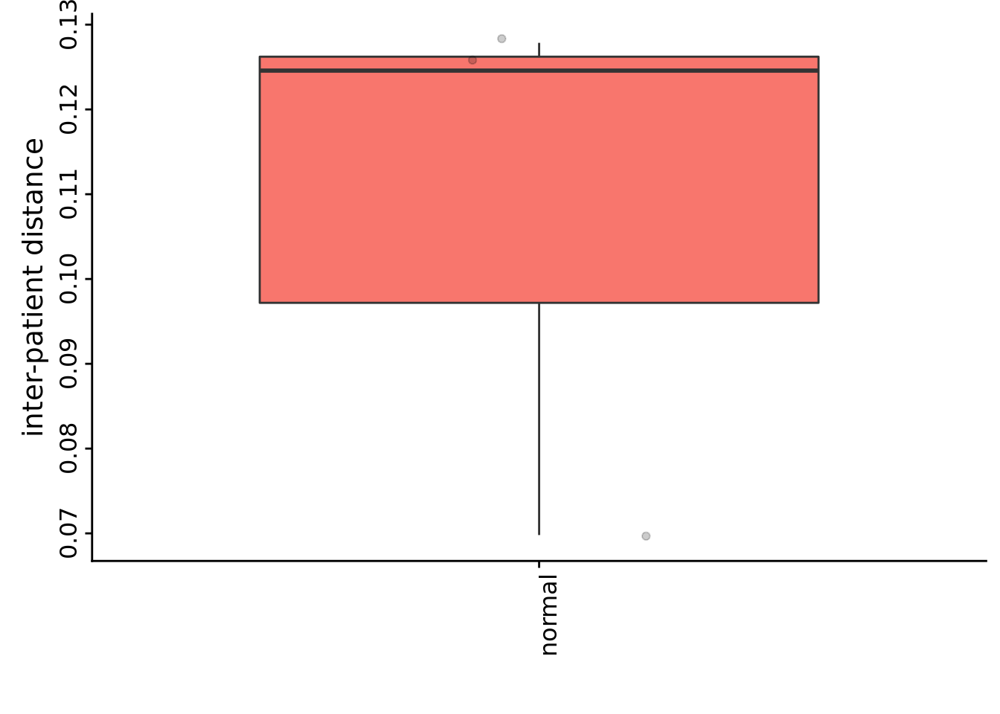

paga_analyses
githubz0r
2019-20-6
Last updated: 2019-07-01
Checks: 6 0
Knit directory: SecretUtils/
This reproducible R Markdown analysis was created with workflowr (version 1.3.0). The Checks tab describes the reproducibility checks that were applied when the results were created. The Past versions tab lists the development history.
Great! Since the R Markdown file has been committed to the Git repository, you know the exact version of the code that produced these results.
Great job! The global environment was empty. Objects defined in the global environment can affect the analysis in your R Markdown file in unknown ways. For reproduciblity it’s best to always run the code in an empty environment.
The command set.seed(20190415) was run prior to running the code in the R Markdown file. Setting a seed ensures that any results that rely on randomness, e.g. subsampling or permutations, are reproducible.
Great job! Recording the operating system, R version, and package versions is critical for reproducibility.
Nice! There were no cached chunks for this analysis, so you can be confident that you successfully produced the results during this run.
Great! You are using Git for version control. Tracking code development and connecting the code version to the results is critical for reproducibility. The version displayed above was the version of the Git repository at the time these results were generated.
Note that you need to be careful to ensure that all relevant files for the analysis have been committed to Git prior to generating the results (you can use wflow_publish or wflow_git_commit). workflowr only checks the R Markdown file, but you know if there are other scripts or data files that it depends on. Below is the status of the Git repository when the results were generated:
Ignored files:
Ignored: .Rhistory
Ignored: .Rproj.user/
Untracked files:
Untracked: .Rbuildignore
Untracked: R/hello.R
Untracked: analysis/make_scanpy_viktor.R
Untracked: analysis/morphine.Rmd
Untracked: analysis/mouse_alzheimer_annotating.Rmd
Untracked: analysis/mouse_alzheimer_preproc.Rmd
Untracked: analysis/paga.Rmd
Untracked: analysis/paga3.Rmd
Untracked: analysis/subtype_distances.Rmd
Untracked: analysis/subtype_distances2.Rmd
Untracked: analysis/subtype_distances4.Rmd
Untracked: analysis/subtype_distances_redux.Rmd
Untracked: analysis/subtype_distances_revenge.Rmd
Untracked: analysis/test_output.Rmd
Untracked: analysis/transmute_peters_code.Rmd
Untracked: docs/figure/paga.Rmd/
Untracked: man/
Unstaged changes:
Modified: DESCRIPTION
Modified: R/asdf.R
Modified: analysis/correlation_stuff.Rmd
Modified: analysis/jensen_shannon_stuff.Rmd
Modified: analysis/misc_metrics.Rmd
Modified: analysis/mouse_alzheimer_analysis.Rmd
Modified: analysis/paga2.Rmd
Modified: analysis/pancreas_indrop.Rmd
Modified: analysis/subtype_distances3.Rmd
Modified: analysis/transmute_code_eps.Rmd
Modified: analysis/transmute_code_eps_2.Rmd
Modified: analysis/visualizations.Rmd
Note that any generated files, e.g. HTML, png, CSS, etc., are not included in this status report because it is ok for generated content to have uncommitted changes.
These are the previous versions of the R Markdown and HTML files. If you’ve configured a remote Git repository (see ?wflow_git_remote), click on the hyperlinks in the table below to view them.
| File | Version | Author | Date | Message |
|---|---|---|---|---|
| Rmd | e62c6c4 | githubz0r | 2019-07-01 | updates to labels when using log scale |
| html | 5d01b86 | githubz0r | 2019-06-28 | Build site. |
| Rmd | 2362793 | githubz0r | 2019-06-28 | small corrections on paga analyses and graph stuff |
| html | d083dbd | githubz0r | 2019-06-27 | Build site. |
| Rmd | 450c79b | githubz0r | 2019-06-27 | paga analysis on eps and updating functions |
| html | 34b8a18 | githubz0r | 2019-06-21 | Build site. |
| Rmd | 20d9d8b | githubz0r | 2019-06-21 | paga analysis on eps and updating functions |
| html | e31dd10 | githubz0r | 2019-06-20 | Build site. |
| Rmd | e8e6689 | githubz0r | 2019-06-20 | paga analysis on eps and updating functions |
load packages etc.
library(conos)Loading required package: MatrixLoading required package: igraph
Attaching package: 'igraph'The following objects are masked from 'package:stats':
decompose, spectrumThe following object is masked from 'package:base':
unionrequire(pagoda2)Loading required package: pagoda2devtools::load_all('/home/larsc/SecretUtils')Loading SecretUtilsLoading required package: magrittrLoading required package: reshape2library(tidyverse)── Attaching packages ────────────────────────────────────────────────────────────────────────────────────────────── tidyverse 1.2.1 ──✔ ggplot2 3.1.1 ✔ purrr 0.3.2
✔ tibble 2.1.2 ✔ dplyr 0.8.1
✔ tidyr 0.8.3 ✔ stringr 1.4.0
✔ readr 1.3.1 ✔ forcats 0.4.0── Conflicts ───────────────────────────────────────────────────────────────────────────────────────────────── tidyverse_conflicts() ──
✖ dplyr::as_data_frame() masks tibble::as_data_frame(), igraph::as_data_frame()
✖ purrr::compose() masks igraph::compose()
✖ tidyr::crossing() masks igraph::crossing()
✖ tidyr::expand() masks Matrix::expand()
✖ tidyr::extract() masks magrittr::extract()
✖ dplyr::filter() masks stats::filter()
✖ dplyr::groups() masks igraph::groups()
✖ dplyr::lag() masks stats::lag()
✖ purrr::set_names() masks magrittr::set_names()
✖ purrr::simplify() masks igraph::simplify()library(cowplot)
Attaching package: 'cowplot'The following object is masked from 'package:ggplot2':
ggsaveEpilepsy
epilepsy_con <- readRDS(file.path('/home/larsc/data/10x_preproced_graphed.rds'))
epilepsy_annot <- readRDS(file.path('/home/demharters/R/projects/UPF9_14_17_19_22_23_24_32_33/metadata_10x_final.rds'))Fix annotation a little bit
epilepsy_annot$cellid <- rownames(epilepsy_annot)nr of cells in each subtype for each condition
condition_split <- split(epilepsy_annot$subtype, epilepsy_annot$condition, drop=TRUE)
condition_split %>% lapply(table)$epilepsy
Id2_Nos1 Id2_Reln L2/3_Cux2 L2_Lamp5 L3_Prss12
497 947 1158 2224 284
L4_Rorb L5_Grin3a L5_Htr2c L6_Nr4a2 L6_Syn3
3271 2431 518 508 714
L6_Tle4 Pvalb_Crh Pvalb_Nos1 Pvalb_Sulf1 Reln_Crh
831 237 312 1444 442
Sst_Calb1 Sst_Tac3_Lhx6 Vip_Crh Vip_Nr2f2 Vip_Sema3c
1354 1802 1811 914 1111
$healthy
Id2_Nos1 Id2_Reln L2/3_Cux2 L2_Lamp5 L3_Prss12
175 444 826 3067 136
L4_Rorb L5_Grin3a L5_Htr2c L6_Nr4a2 L6_Syn3
915 463 109 120 219
L6_Tle4 Pvalb_Crh Pvalb_Nos1 Pvalb_Sulf1 Reln_Crh
163 93 31 909 183
Sst_Calb1 Sst_Tac3_Lhx6 Vip_Crh Vip_Nr2f2 Vip_Sema3c
654 642 1080 538 621 Read unaligned graph adj obtained with pagoda2 on the whole raw matrix
eps_unaligned_adj <- readMM('/home/larsc/data/eps_unaligned_adj.mtx')paga_subtype_condition <- GeneratePagaItems(eps_unaligned_adj, epilepsy_annot$subtype, epilepsy_annot$condition,
by.subtypes.condition = T, log.scale=F)
paga_subtype_condition$scatter.plot # has matrix, data frame and plot
Distance matrix tsne plot, using only a single n_sample x n_sample matrix, using log scale
samples_connectivities <- GeneratePagaItems(eps_unaligned_adj, sample.vector=epilepsy_annot$sample, by.sample=T, log.scale=T,
pseudo.connectivity = 1e-3)
# put it in log scale for better visualization, so we add a small pseudo connectivity
SecretUtils::PlotDistanceMatRed(samples_connectivities$connectivities, epilepsy_annot$sample, epilepsy_annot$subtype,
epilepsy_annot$sample, epilepsy_annot$cellid, epilepsy_annot$condition, perplexity=2,
max_iter=1e5, by.subtype=F)
Within conditions distances
samples_connectivities <- GeneratePagaItems(eps_unaligned_adj, sample.vector=epilepsy_annot$sample, by.sample=T)
SecretUtils::ConditionDistanceDensity(samples_connectivities$connectivities, epilepsy_annot$sample, epilepsy_annot$subtype,
epilepsy_annot$sample, epilepsy_annot$cellid, epilepsy_annot$condition, notch=F, by.subtype=F)
Using subtype-sample partitions
paga_subtype_samples <- GeneratePagaItems(eps_unaligned_adj, epilepsy_annot$subtype, epilepsy_annot$condition,
epilepsy_annot$sample, by.subtypes.samples = T)
paga_subtype_samples$sub.cond.plot
Deeper look at between distances
GeneratePagaPlot(paga_subtype_samples$paga.df, subset='between')
log scale
paga_subtype_samples_unlin <- GeneratePagaItems(eps_unaligned_adj, epilepsy_annot$subtype, epilepsy_annot$condition,
epilepsy_annot$sample, by.subtypes.samples = T, log.scale=T,
pseudo.connectivity=1e-3)
paga_subtype_samples_unlin$sub.cond.plot
GeneratePagaPlot(paga_subtype_samples_unlin$paga.df, subset='between', log.scale=T)
| Version | Author | Date |
|---|---|---|
| 5d01b86 | githubz0r | 2019-06-28 |
Pancreas indrop, 4 samples
pancreas_con <- readRDS('/home/larsc/data/pancreas_indrop_conos_precced_graphed.rds')
location_of_annot <- '/d0-mendel/home/viktor_petukhov/SmallProjects/conos_back/data/conditions/seurat_islets/indrop/design_info.csv'
pancreas_annot <- location_of_annot %>% data.table::fread(sep=",",header=T) %>% as.data.frame()nr of cells in each subtype for each condition, lots of very small partitions so they will be distorting the results
condition_split <- split(pancreas_annot$CellType, pancreas_annot$Disease, drop=TRUE)
condition_split %>% lapply(table)$normal
acinar activated_stellate alpha
956 232 2042
beta delta ductal
2030 500 797
endothelial epsilon gamma
245 17 192
macrophage mast quiescent_stellate
45 24 168
schwann t_cell
12 6
$`type II diabetes mellitus`
acinar activated_stellate alpha
2 52 284
beta delta ductal
495 101 280
endothelial epsilon gamma
7 1 63
macrophage mast quiescent_stellate
10 1 5
schwann t_cell
1 1 Create unaligned matrix
raw_pancreas <- RbindRaw(pancreas_con)
unaligned_pancreas <- SecretUtils::GenerateUnalignedAdj(raw_pancreas, pancreas_annot$CellId)8569 cells, 20125 genes; normalizing ... using plain model winsorizing ... log scale ... done.
calculating variance fit ... using gam 1221 overdispersed genes ... 1221 persisting ... done.
running PCA using 3000 OD genes .... doneScatter plot of PAGA values for subtype-condition partitions
paga_subtype_condition <- GeneratePagaItems(unaligned_pancreas, pancreas_annot$CellType, pancreas_annot$Disease,
by.subtypes.condition = T)
paga_subtype_condition$scatter.plot
Distance matrix tsne plot, using only a single n_sample x n_sample matrix.
samples_connectivities <- GeneratePagaItems(unaligned_pancreas, sample.vector=pancreas_annot$Individual, by.sample=T)
# put it in log scale for better visualization, so we add a small pseudo connectivity
SecretUtils::PlotDistanceMatRed(log(samples_connectivities$connectivities+1e-6), pancreas_annot$Individual, pancreas_annot$CellType,
pancreas_annot$Individual, pancreas_annot$CellId, pancreas_annot$Disease, perplexity=1,
max_iter=1e5, by.subtype=F)
Within conditions distances using same single sample x sample matrix (we only have 1 diseased sample/individual)
SecretUtils::ConditionDistanceDensity(samples_connectivities$connectivities, pancreas_annot$Individual, pancreas_annot$CellType,
pancreas_annot$Individual, pancreas_annot$CellId, pancreas_annot$Disease, notch=F,
by.subtype=F)
paga_subtype_samples <- GeneratePagaItems(unaligned_pancreas, pancreas_annot$CellType, pancreas_annot$Disease,
pancreas_annot$Individual, by.subtypes.samples = T)
paga_subtype_samples$sub.cond.plot
closer look at between distances
GeneratePagaPlot(paga_subtype_samples$paga.df, subset='between')
sessionInfo()R version 3.5.3 (2019-03-11)
Platform: x86_64-pc-linux-gnu (64-bit)
Running under: Ubuntu 18.04.2 LTS
Matrix products: default
BLAS: /usr/lib/x86_64-linux-gnu/atlas/libblas.so.3.10.3
LAPACK: /usr/lib/x86_64-linux-gnu/atlas/liblapack.so.3.10.3
locale:
[1] LC_CTYPE=en_US.UTF-8 LC_NUMERIC=C
[3] LC_TIME=en_US.UTF-8 LC_COLLATE=en_US.UTF-8
[5] LC_MONETARY=en_US.UTF-8 LC_MESSAGES=en_US.UTF-8
[7] LC_PAPER=en_US.UTF-8 LC_NAME=C
[9] LC_ADDRESS=C LC_TELEPHONE=C
[11] LC_MEASUREMENT=en_US.UTF-8 LC_IDENTIFICATION=C
attached base packages:
[1] stats graphics grDevices utils datasets methods base
other attached packages:
[1] cowplot_0.9.4 forcats_0.4.0 stringr_1.4.0
[4] dplyr_0.8.1 purrr_0.3.2 readr_1.3.1
[7] tidyr_0.8.3 tibble_2.1.2 ggplot2_3.1.1
[10] tidyverse_1.2.1 SecretUtils_0.1.0 reshape2_1.4.3
[13] magrittr_1.5 pagoda2_0.1.0 conos_1.0.0
[16] igraph_1.2.4 Matrix_1.2-17
loaded via a namespace (and not attached):
[1] nlme_3.1-139 fs_1.3.1 usethis_1.5.0
[4] lubridate_1.7.4 devtools_2.0.2 httr_1.4.0
[7] rprojroot_1.3-2 tools_3.5.3 backports_1.1.4
[10] R6_2.4.0 irlba_2.3.3 mgcv_1.8-28
[13] lazyeval_0.2.2 colorspace_1.4-1 withr_2.1.2
[16] tidyselect_0.2.5 gridExtra_2.3 prettyunits_1.0.2
[19] processx_3.3.1 compiler_3.5.3 git2r_0.25.2
[22] rvest_0.3.4 cli_1.1.0 xml2_1.2.0
[25] desc_1.2.0 labeling_0.3 triebeard_0.3.0
[28] scales_1.0.0 callr_3.2.0 digest_0.6.18
[31] rmarkdown_1.12 base64enc_0.1-3 pkgconfig_2.0.2
[34] htmltools_0.3.6 sessioninfo_1.1.1 readxl_1.3.1
[37] rlang_0.3.4 rstudioapi_0.10 shiny_1.3.2
[40] generics_0.0.2 jsonlite_1.6 dendextend_1.12.0
[43] Rcpp_1.0.1 munsell_0.5.0 abind_1.4-5
[46] viridis_0.5.1 stringi_1.4.3 whisker_0.3-2
[49] yaml_2.2.0 MASS_7.3-51.3 pkgbuild_1.0.3
[52] Rtsne_0.15 plyr_1.8.4 grid_3.5.3
[55] parallel_3.5.3 promises_1.0.1 crayon_1.3.4
[58] lattice_0.20-38 splines_3.5.3 haven_2.1.0
[61] hms_0.4.2 knitr_1.22 ps_1.3.0
[64] pillar_1.4.1 rjson_0.2.20 pkgload_1.0.2
[67] glue_1.3.1 evaluate_0.13 data.table_1.12.2
[70] remotes_2.0.4 modelr_0.1.4 httpuv_1.5.1
[73] urltools_1.7.3 cellranger_1.1.0 testthat_2.1.1
[76] gtable_0.3.0 assertthat_0.2.1 xfun_0.6
[79] mime_0.6 xtable_1.8-4 broom_0.5.2
[82] later_0.8.0 viridisLite_0.3.0 memoise_1.1.0
[85] workflowr_1.3.0 Rook_1.1-1 brew_1.0-6